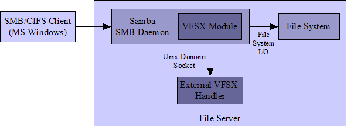

VFSX – Samba VFS External Bridge
Overview
VFSX is a transparent Samba Virtual File System (VFS) module which forwards operations to a process on the same machine for handing outside of the Samba daemon process (smbd). The external handler can be implemented in any language with support for Unix domain sockets (Python, Ruby, Perl, Java with Jtux) which is how VFSX and its external process communicates. For every VFS operation invoked by the Samba daemon, VFSX sends to the handler the name of the operation, the local directory path of the shared SMB service, the ID of the calling user, and any additional arguments required for the operation.
The advantage of using VFSX over a pure VFS module is that any programming language can be used to implement the transparent operations. VFS modules linked directly into the Samba daemon must be written in C or C++. while VFSX lets the developer implement a transparent module in his favorite higher-level language, with all the advantages of that language, outside of the smbd process.
The following figure illustrates a typical file server configuration with VFSX:

For Samba shares configured with VFSX as a VFS module, all client requests to manipulate files and directories will first be sent to the external handler process. The handler may respond to any operation for which it is designed. Note that since VFSX is a transparent module, file contents may not be passed between the VFSX module and its handler; The Samba daemon must still handle the file system I/O directly. However, the external handler may choose to reject an operation and return an error code which will be passed on to the client.
Links